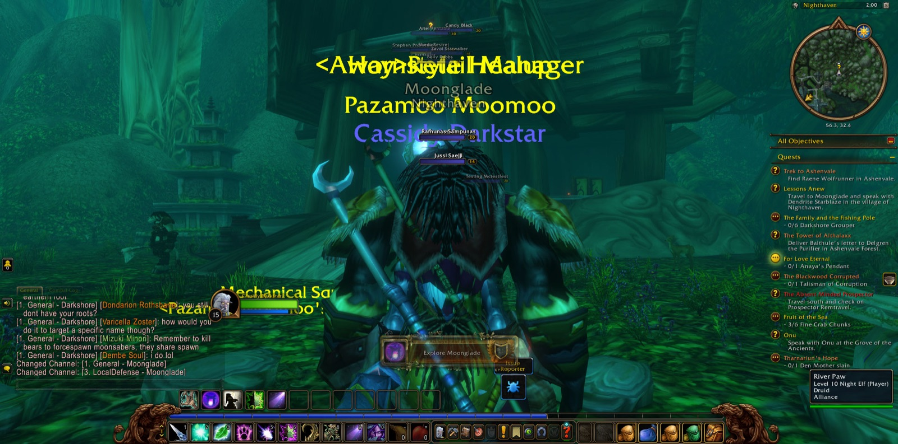
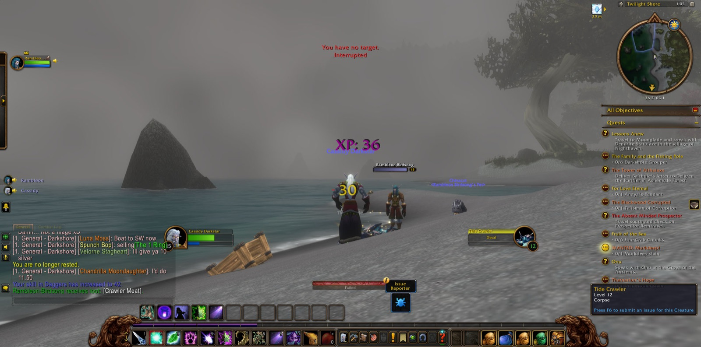
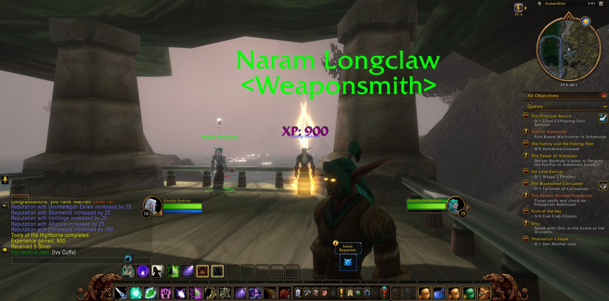

Cassidy Darkstar went out from Auberdine into Darkshore, and his first labour there was among the bears. Thistle Bears and Rabid Thistle Bears fell before him, twenty of the infected beasts in all, until the Cleansing of the Infected was done. By the Cliffspring River and past Bashal'Aran he went, and down to Cliffspring Falls, where the Stormscale Sirens and Wave Riders were many. There he gathered a Death Cap and five Scaber Stalks for the errand of the Cave Mushrooms, and drew a sample from the Cliffspring River besides. He had company on that stretch of the road. Shcat the druid walked beside him only a little way. Istvanna and Pheonix, both hunters, stood with him longer at the falls. He fell there once, and rose, and finished what he had come to do.


He returned to Auberdine and there came into his fifteenth year of strength, and many new errands were laid upon him: Tharnariun's Hope, Onu, WANTED: Murkdeep!, Fruit of the Sea, The Absent Minded Prospector, and The Blackwood Corrupted. There also Rambleon the hunter joined him, and of all his companions Rambleon went furthest with him, parting and returning more than once. Together they went to the Tower of Althalaxx, where the Dark Strand Fanatics were thick about the stones. In the Ruins of Mathystra Delmanis the Hated was overcome, and four Worn Parchments were gathered. Cassidy took many pictures in that place. He came away bearing Balthule's letter for Delgren the Purifier in Ashenvale Forest.


Then he crossed the Veiled Sea to Rut'theran Village and went up into Darnassus, and in the Cenarion Enclave he took up Lessons Anew. Back upon Twilight Shore he contended with the Greymist, their seers and netters, warriors and hunters, and with Caerwyn the paladin and Reighna the hunter briefly at his side he slew Murkdeep. He found the bones of a Beached Sea Creature and a Strangely Marked Box from a Beached Sea Turtle, meeting Elentria the paladin for a moment there, and bore them to Gwennyth Bly'Leggonde in Auberdine. After that he took up the Trek to Ashenvale. Then he came to Nighthaven in Moonglade, and there he sought the Great Bear Spirit, and passed to and fro between Moonglade and Darnassus on the errands of Back to Darnassus and Body and Heart, until the Lunaclaw was overcome and the lesson was complete.


Afterwards he went to Ameth'Aran, and with that the whole of Darkshore had been walked by him. Among the Cursed, Writhing and Wailing Highborne he read the Lay of Ameth'Aran and the Fall of Ameth'Aran, and gathered seven Highborne Relics. Viserion, Soy and Duncard passed with him there for a brief while. He took many pictures among those ruins before he went back to Auberdine and came into his sixteenth year of strength. At Mist's Edge he took the eyes of the Darkshore Threshers for Buzzbox 411 and was given Buzzbox 323. Later, with Rambleon beside him again, he took Fine Crab Chunks for Fruit of the Sea and saw that errand through. Last of all the two went south through Twilight Vale to Blackwood Den, and there Rambleon took his leave. Balthule's letter was still unopened in Cassidy's pack, and the road to Ashenvale lay before him.

